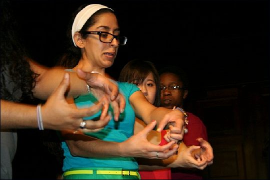
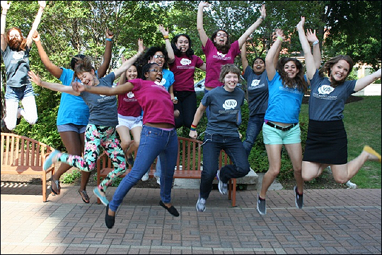
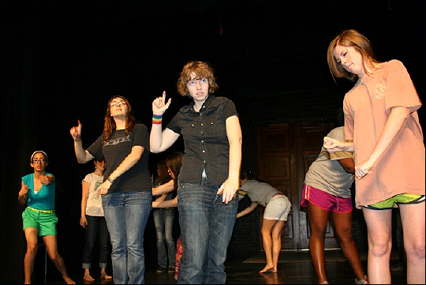

Voices Against Violence Theatre for Dialogue (TFD) uses applied theatre and performance to initiate conversations about relationships, consent, boundaries, and signs of power and control. TFD programs are interactive and ask UT students, staff and faculty to consider: What does a healthy relationship mean to you? What are your boundaries around sex? How do you negotiate difficult or uncomfortable conversations? How do you know you are on the same page with your partner? All Theatre for Dialogue programs are performed by undergraduate and graduate students at UT Austin who are trained through the Theatre for Dialogue class.
Click here to request a performance Theatre for Dialogue performances are excellent for starting conversations within student organizations, academic classes, staff and faculty trainings, campus and community organizations. All performances are free to the UT community!
To get involved in the performance ensemble, check out the Theatre for Dialogue class page.
The Theatre for Dialogue program currently offers two interactive performances for the UT Austin campus: Get Sexy. Get Consent. and "I like, LIKE you...Exploring Relationships".
Get Sexy, Get Consent



"I Like, LIKE you..."
Take the Theatre for Dialogue class